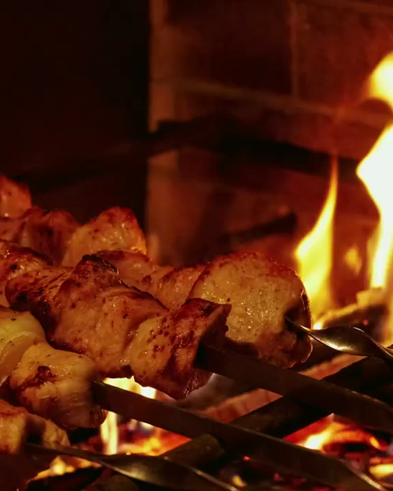

Kuzu Şiş
Meşe kömüründe, kuyruk yağıyla dengelenmiş kuzu kuşbaşı.
480 ₺ateş yanıyor
0%
Yenikent · Sincan · Ankara
Ateş burada bir pişirme yöntemi değil,
bir sofra kurma biçimi.
Hikâye
Günlük kesim. Sabah gelir, akşam ateşe girer.
Terbiye yok, sos yok. Kaya tuzu ve bir gece.
Meşe kömürü. Alev değil kor — kırk santim mesafe.
On dört dakika. Ne bir eksik, ne bir fazla.
kaydırarak ateşi çevir
Galeri
Her akşam aynı ritüel: kor tutar, şiş döner, sofra kurulur.
Mekân
Necip Fazıl Bulvarının hemen arkasında, 818. Sokakta. İçeride 120 kişilik salon, yazın açılan bahçede 60 kişilik ek alan. Nişan, mevlit ve kurumsal yemekler için salon tamamen kapatılabiliyor.